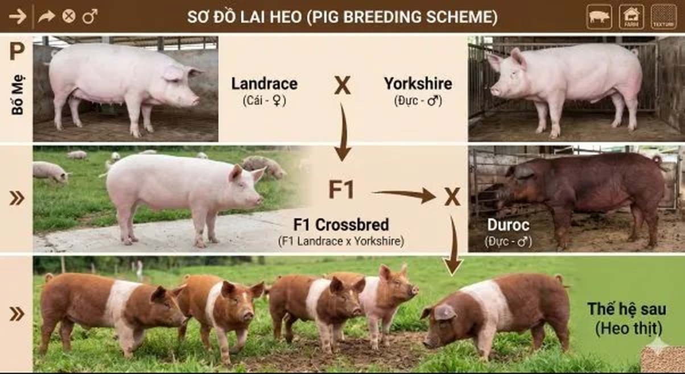
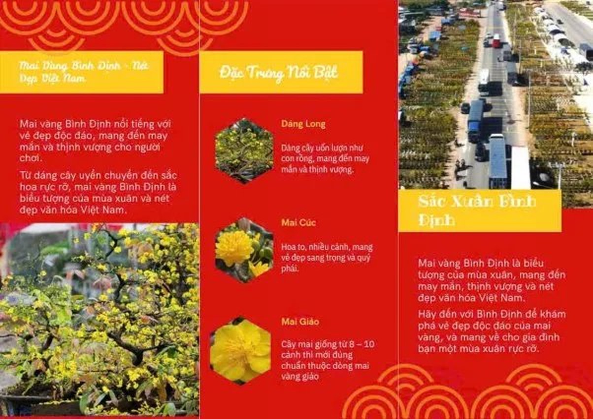

Landrace
Đan Mạch · 🇩🇰Chuyên gia sinh sản & nuôi con
- Số con/lứa cao: 10–14 con
- Tiết sữa dồi dào, nuôi con khéo
- Thân dài, 16–17 đôi xương sườn
- Tai to, rủ che mặt
Chào mừng bạn đến với không gian triển lãm số của tập thể lớp 12A6. Tại đây, chúng tôi kết nối những lý thuyết về di truyền và lai hữu tính từ sách giáo khoa với những thành tựu thực tế ngay tại quê hương Phù Cát.
Để tạo ra những chú heo có năng suất vượt trội tại các trang trại Cát Trinh, người nông dân đã vận dụng công thức lai kinh điển giữa ba giống heo ngoại nhập.

Chuyên gia sinh sản & nuôi con
Tốc độ tăng trưởng siêu nhanh
Thịt nạc thượng hạng
Đây chính là minh chứng sống động nhất cho Ưu thế lai — khi con lai vượt trội cả bố lẫn mẹ về các đặc tính kinh tế.
Khác với các vùng khác thường ghép cành, người trồng mai Phù Cát ưu tiên phương pháp gieo hạt (lai hữu tính) để tạo ra những gốc mai có bộ đế vững chãi và sức sống bền bỉ qua hàng chục năm.
Cây mẹ phải có hoa đẹp, từ 9 đến 36 cánh, màu vàng tươi rực rỡ và bộ đế vững.
Để hoa thụ phấn tự nhiên hoặc thụ phấn chéo có chọn lọc giữa các cây mẹ ưu tú.
Hạt mai chín già được thu vào tháng 5–6, phơi mát rồi gieo ngay khi đất còn ẩm.
Sau 3–5 năm, chọn lọc những cây có dáng đẹp, gốc bự để dưỡng thành tác phẩm hoàn chỉnh.
Mỗi gốc mai không chỉ là một tác phẩm nghệ thuật mà còn là nguồn "vàng xanh" giúp người dân thoát nghèo, vươn lên làm giàu trên chính mảnh đất quê hương.
Bài báo dưới đây do chính tay các bạn học sinh lớp H6K55 biên soạn, giới thiệu vẻ đẹp và những đặc trưng nổi bật của Mai Vàng Bình Định — biểu tượng văn hóa của miền đất Phù Cát quê hương.

Mọi thắc mắc về kỹ thuật lai tạo giống địa phương, hãy liên hệ với đội ngũ chuyên gia nhí 12A6 hoặc giáo viên hướng dẫn.
Gửi thư cho chúng tôi lamda388@gmail.comQuét mã QR bên cạnh để mở nhanh trang triển lãm trên điện thoại — tiện lợi để dán vào báo cáo Sáng kiến kinh nghiệm.